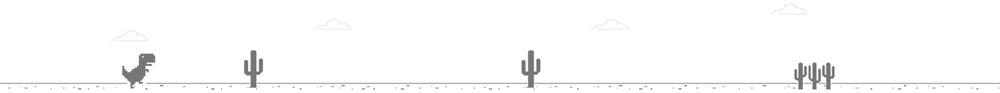

地瓜盒 | DiguaCloud

主页 >> 隐藏页
----- Website Info -----Flask Version: {{flask_info}}
Python Version: {{python_info}}
{{app_info}}
{{system_name}} {{system_release}} {{system_machine}};
CPU：{{cpu_percent}}
Memory：{{memory}}
日志下载
日志功能请使用user_args.txt启动，直接启动是没有日志功能的。
*此页面仅供调试，生产环境请勿使用--extra与--debug参数启动。